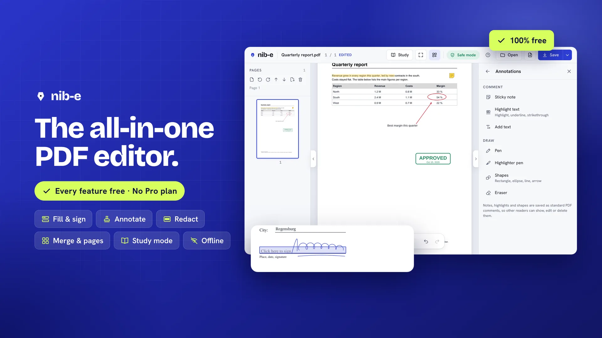
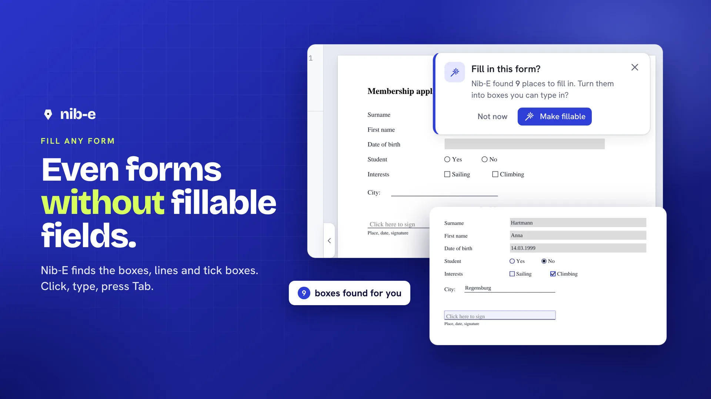
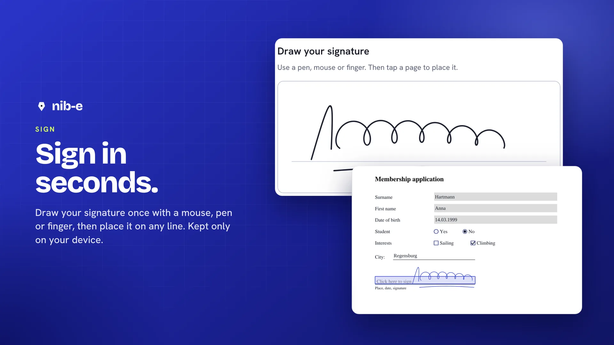
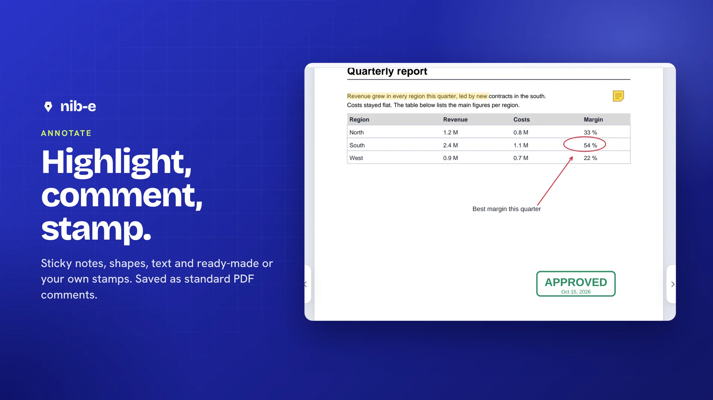
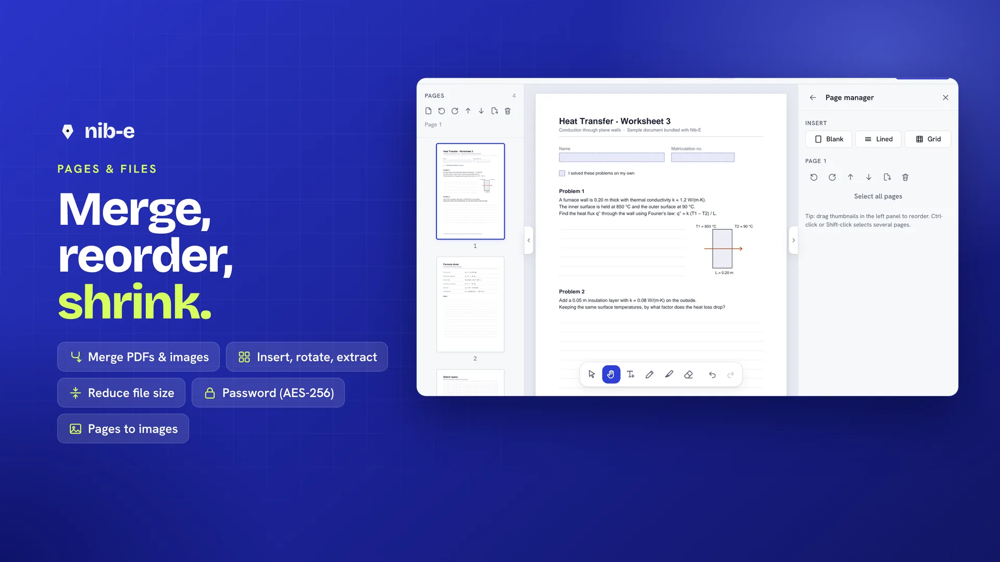
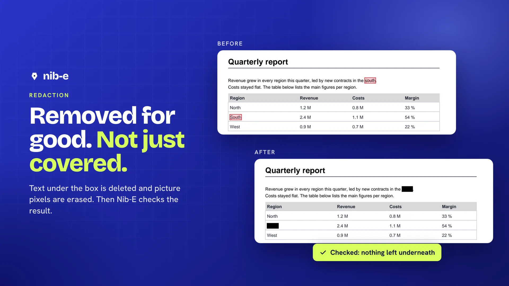
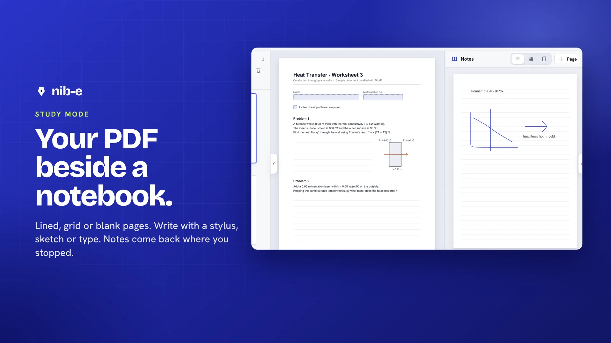
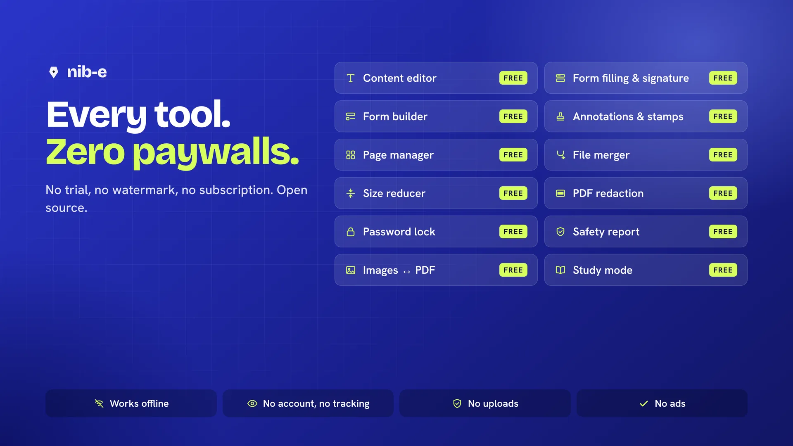

The all-in-one PDF editor. Every feature free.
Fill forms, sign, write and draw, redact, organise pages and study, in your browser or as an app. No paywalls, no Pro plan, no account.
Works in Chrome, Edge, Firefox and Safari, also on phones and tablets · Desktop app for Windows (Microsoft Store), macOS and Linux.
All in one
Every PDF tool you need. None of them behind a paywall.
| Feature | Many PDF editorsReading is free. The rest needs a subscription or a “Pro” upgrade. | Nib-EEvery tool free. No trial, no watermark. MIT licence. |
|---|---|---|
Fill any formEven forms without form fields: Nib-E finds the boxes, lines and tick boxes and asks if you want to fill them. Text matches the form's font. |
Fillable forms only | Free |
SignDraw your signature once, place it anywhere, keep it on this device if you like. |
Often free | Free |
Edit existing textClick a line of the PDF and type. Nib-E keeps the font, size, colour and alignment (one line at a time). |
Usually a paid plan | Free |
Certificate signaturesSign with your own certificate (.p12/.pfx) and check the signatures in a PDF: intact, changed after signing, or not valid. |
Checking free, signing often paid | Free |
Text recognition (OCR)Makes scanned pages searchable and copyable, on your device. English and German. |
Usually a paid plan | Free |
Write like on paperPen and highlighter with stylus pressure and palm rejection. Choose how much your writing is smoothed: precise for handwriting, smooth for diagrams. |
Varies | Free |
Study modeYour PDF beside a lined, grid or blank notebook. Notes are kept as you write and come back, at the page where you stopped, when you open the book again. The book file stays untouched unless you choose otherwise. |
Rarely available | Free |
Annotations and stampsSticky notes, highlights, shapes, ready-made stamps, or design your own stamp and reuse it. |
Basic free, custom stamps often paid | Free |
Redaction that really removesText under the box is deleted and picture pixels erased. Nib-E checks the result before you save. |
Usually a paid plan | Free |
Pages and filesInsert, rotate, reorder, delete and extract pages. Merge PDFs, reduce the file size, lock with a password, export pages as images. |
Usually a paid plan | Free |
Several files at onceEach PDF opens in its own tab. Save writes back to the file you opened, the earlier version can be restored, and unsaved work survives a crash. |
Usually | Free |








Private by design
And your PDFs never leave your computer.
Most online PDF tools upload your documents to their servers. Nib-E does all the work inside your browser, so contracts, IDs and exam papers stay with you.
Network: none
Opening, editing and saving happen on your device. The desktop app has no internet permission at all, and the web version can only load its own text-recognition files from this site once loaded.
No account, no tracking, no AI
Nothing about you or your files is collected. No AI service ever sees your text.
Safe mode
Scripts inside PDFs never run and links can't open anything by themselves. Nib-E shows what it blocked.
Desktop app
Install Nib-E. It never goes online.
Same Nib-E, as a normal app: opens PDFs from your file manager (“Open with Nib-E”), saves straight back to the file, and has no permission to use the internet. Free, no account.
Windows
Windows 10 and 11.
Signed by Microsoft: no warning, and updates install by themselves.
Microsoft Store: on its way. Until then, use the installer from GitHub.
macOS
Apple silicon and Intel.
Linux
AppImage (any distribution) or .deb (Ubuntu, Debian).
Why the warnings? The GitHub installers are not signed with a paid certificate yet; the Microsoft Store version is signed by Microsoft and has no warning. Every installer is built openly from this source code by GitHub. Nib-E never checks for updates by itself: the Store updates its version, and for the others you download a newer version here and install it over the old one (settings and study notes are kept). Prefer no install at all? Download Nib-E.html, a single file that opens in your browser and works offline.
Feedback
Something odd? Tell us.
Try Nib-E with your own PDFs: forms, lecture slides, scans, long reports. Every report helps.
- Open Nib-E and use it like you normally use a PDF reader.
- Something odd? Note what you did and which browser you use.
- Tell us in the feedback form (no account needed), or use Help → Send feedback in Nib-E. Please don't attach private documents.